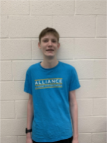

Abigail Harris
Notebook Team

I am a tenth grader at the Alliance Academy. I did robotics for one year in middle school. This will be my first year in the program and I am beyond excited for the opportunity to create, inspire, and reach out to my community with my team. Robotics gives me the opportunity to experiment and broaden my skills within a new field while making friends and helping my community.I enjoy helping people and volunteering my time with my community through organizations such as the Red Cross and 4-H. I am waiting with bated breath for the upcoming season and absolutely cannot wait to see what impact our team can have.